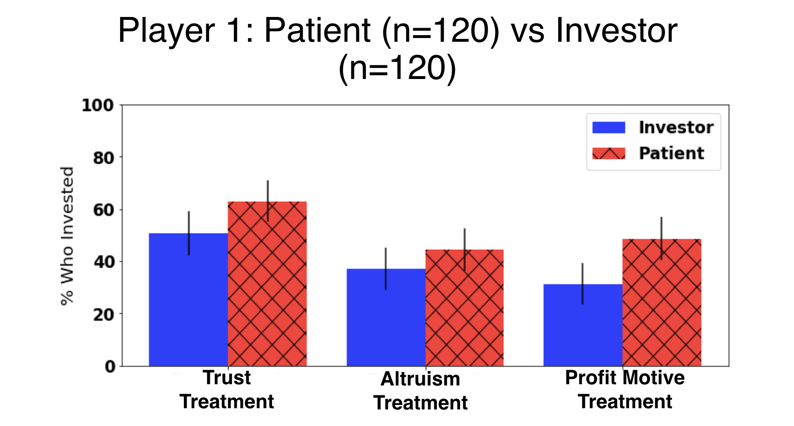

Project Description

Bioinformatics research project for the Vanderbilt Summer Science Academy. The project used game theory principles to gauge how how participants weighed risk/reward in situations involving their genomic data versus their wealth.
There is an increasing tendency for patients to have their genomic data sequenced and processed in the clinical domain. While there is an opportunity to personalize an individual's care, such data disclosure also raised various privacy risks.
This project gauged the degree to which an individual will assume such risks in exchange for the potential benefit that may be realized by sharing genetic data for biomedical research purposes. The methodology built on a two-participant trust game framework, a behavioral economics technique. The project's purpose was to find if there would be a significant difference between participants' risk aversion to sharing their genetic data versus the risk aversion to suffering a monetary loss. The findings could provide insight into public policy recommendations on how to obtain, process, and secure personal genetic data.
Statistical analyses including chi-square testing, bidirectional sign tests, and two-prop Z-tests
Graph and/or chart output for each different type of test
Analyses were ran on raw csv data directly imported from MTurk
Using MechanicalTurk to collect data and importing it into Jupyter Notebook as a csv
Using Python to analyze the data
Using the pandas and scipy to conduct statistical analyses
Using matplotlib library to create graphs and charts based on the analyses
Explaining the methodology and the significant findings during a 20-minute lecture as well as a poster presentation
This research project was designed by Vanderbilt University's Zeeshan Samad, MPP, MA with support from Myrna Wooders, PhD; Bradley Malin, PhD; and Yevgeniy Vorobeychik, Phd.
My participation in this project was a part of the Vanderbilt Summer Science Academy
Special thanks to Professor Bradley Malin for bringing me into his lab and thoroughly explaining fascinating bioinformatics and economics concepts.
Steve Nyemba, MS, was instrumental in training me in using Jupyter Notebooks as well as MTurk
Thanks to everyone at GetPreCiSe (The Center for Genetic Privacy and Identity in a Community Setting) for their support and welcoming, as well as the incredible weekly talks
My participation in the VSSA was supported by NSF REU grant #1757644
{kind=link}